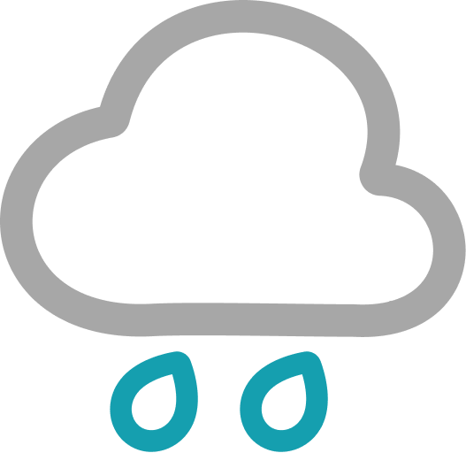
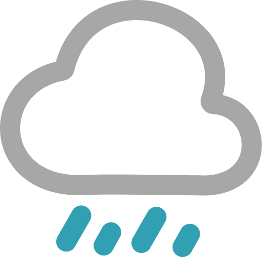
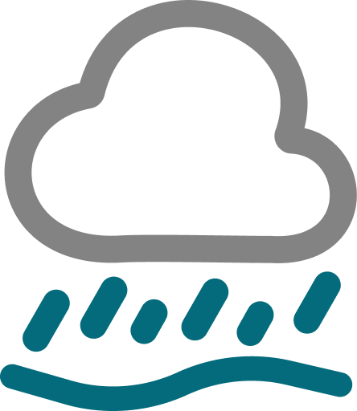
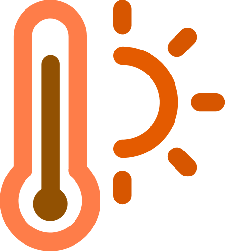

00 / 7天天氣概況（自動分析天氣圖表）
01B / 7天氣象要素與天氣系統趨勢圖
04 / 每日每小時 8 方位風向與風速級別統計 (7天)
05 / 天氣圖標、溫度、濕度與紫外線說明
天氣圖標與描述對照表
| 圖標 |
天氣狀況描述 |
判定依據與說明 |
|
天晴 / 大致天晴 |
天晴：大部份時間天空總雲量少於3成，日間陽光充沛；大致天晴：總雲量介於3至5成或雲層十分稀薄。 |
|
天晴，部份時間多雲 / 部份時間有陽光 |
天晴時間佔多但雲量有時增多，或日間出現陽光的時間多於一半。 |
|
短暫時間有陽光 |
日間間歇性地出現陽光，日間（或預報時段內）出現陽光的時間少於一半。 |
|
大致多雲 / 多雲 |
大致多雲：總雲量為8成或以上；多雲：總雲量為9成或以上。 |
|
密雲 |
天色陰暗，天空被深厚的雲層遮蔽。 |
|
煙霞 / 薄霧 / 霧 |
煙霞：沙塵或污染物阻礙視線（能見度 ≤ 5km）；薄霧：水汽凝結（1km ≤ 能見度 ≤ 5km）；霧：水汽凝結嚴重阻礙視線（能見度 < 1km）。 |
 |
微雨 / 毛毛雨 |
雨滴細小、稠密、均勻分佈且較有持續性，但只有少量雨量。 |
 |
雨 / 驟雨 |
雨：層狀雲產生，強度均勻緩和且較有持續性；驟雨：積雨雲產生且突如其來，時強時弱，具局部地區性。 |
|
雷雨 |
伴有雷暴的驟雨，而且經常出現強烈陣風。 |
 |
雨勢有時頗大 |
有可能短暫時間內出現降雨量超過20毫米的大雨（模型達10mm/h或日累積30mm以上即觸發提示）。 |
 |
高溫天氣 |
最高氣溫達到 32.5°C 或以上。 |
|
低溫天氣 |
最低氣溫降至 12.5°C 或以下。 |
氣象參數描述與定義對照表
溫度級別分類
| 描述名稱 |
定義與標準說明 |
| 炎熱 |
最高氣溫達到 27.5°C 至 32.4°C。 |
| 酷熱 |
最高氣溫達到 32.5°C 至 35.4°C。 |
| 非常酷熱 |
最高氣溫達到 35.5°C 至 37.4°C。 |
| 極為酷熱 |
最高氣溫達到 37.5°C 或以上。 |
| 相當清涼 |
最低氣溫在 12.5°C 至 14.4°C 之間。 |
| 寒冷 |
最低氣溫在 7.5°C 至 12.4°C 之間。 |
| 非常寒冷 |
最低氣溫在 4.5°C 至 7.4°C 之間。 |
| 極為寒冷 |
最低氣溫降至 4.4°C 或以下。 |
氣溫降幅程度
| 描述名稱 |
定義與標準說明 |
| 氣溫下降 / 略降 |
相較前一日最低溫下降 2°C 至 4°C。 |
| 氣溫顯著下降 |
相較前一日最低溫下降 5°C 至 6°C。 |
| 氣溫大幅顯著下降 |
相較前一日或前兩日最低溫降幅達 7°C 或以上。 |
濕度狀況
| 描述名稱 |
定義與標準說明 |
| 潮濕 |
全日相對濕度平均值達到 80% 或以上。 |
| 非常潮濕 |
全日相對濕度平均值達到 95% 或以上。 |
| 乾燥 |
全日相對濕度極值或平均值在 40% 或以下。 |
| 非常乾燥 |
全日相對濕度極值或平均值降至 30.5% 或以下。 |
紫外線指數級別
| 級別 |
紫外線指數 |
| 低 |
0 至 2 |
| 中等 |
3 至 5 |
| 高 |
6 至 7 |
| 甚高 |
8 至 10 |
| 極高 |
11 或以上 |
降雨風險評級
| 風險級別 |
綜合評分 |
| 低 |
0 至 15 分 |
| 中 |
16 至 40 分 |
| 高 |
41 至 75 分 |
| 極高 |
76 至 100 分 |
時間及出現頻率描述（天氣用詞標準 2025-12-10）
| 描述用詞 |
定義與標準說明 |
| 有一兩陣* | 零星出現，頻密程度較「有幾陣」低，具有局部地區性（約 1–2 小時）。 |
| 有幾陣* | 出現時間短暫及零散分佈，具有局部地區性（約 3–5 小時）。 |
| 間中有* | 間歇性地出現，頻密程度較「有幾陣」高，整日出現時間少於一半（約 6–11 小時）。 |
| 有* | 頻繁且可能持續出現，整日出現時間多於一半（12 小時或以上）。 |
| 後轉 | 表示整日（或預報時段內）的後半部份會出現天氣變化。 |
| 初時 / 稍後 / 末期 | 初時：最初三分之一時段（00–07時）；稍後：最後三分之二時段（08–23時）；末期：最後三分之一時段（16–23時）。 |